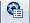

KeyShot Options dialog box- Output Size
-
Specifies the extent of the image or animation in pixels.
- Preset
-
Lists the standard resolution values.
- Custom
-
- Width
-
Sets a value for the width in pixels.
- Height
-
Sets a value for the height in pixels
- Maintain aspect ratio
-
When selected, maintains a consistent ratio between the values as you enter them.
- Output Quality
-
Controls the image resolution. Moving the slider to the far left yields the smallest file size with the coarsest tessellation for the Solid Edge model. Moving the slider to the right increases the fineness of the tessellated Solid Edge exported model.
- Start KeyShot
-
Make sure this option is selected. If this option is not checked, the .bip is not rendered but is saved in the specified location. The default location is the last folder defined in the Save As dialog box. You can redefine the location on save.